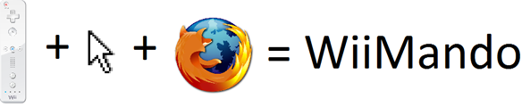

Resumo
Serve o presente trabalho para se efectuar uma abordagem à possibilidade de se substituir o periférico conhecido como rato por um Wii Mote, com vista a facilitar a navegação na Web em situações de aulas e/ou apresentações.

Através da aplicação desenvolvida é possível usar uma variedade de funções orientadas para o
browser Mozilla Firefox e definir quais os botões que efectuam essas funções, sendo
também permitido alterar a velocidade e a orientação da movimentação do cursor do rato.
Comparativamente ao rato, após testes efectuados, considera-se tratar de um sistema com
precisão e eficiência, necessitando apenas de alguma prática.